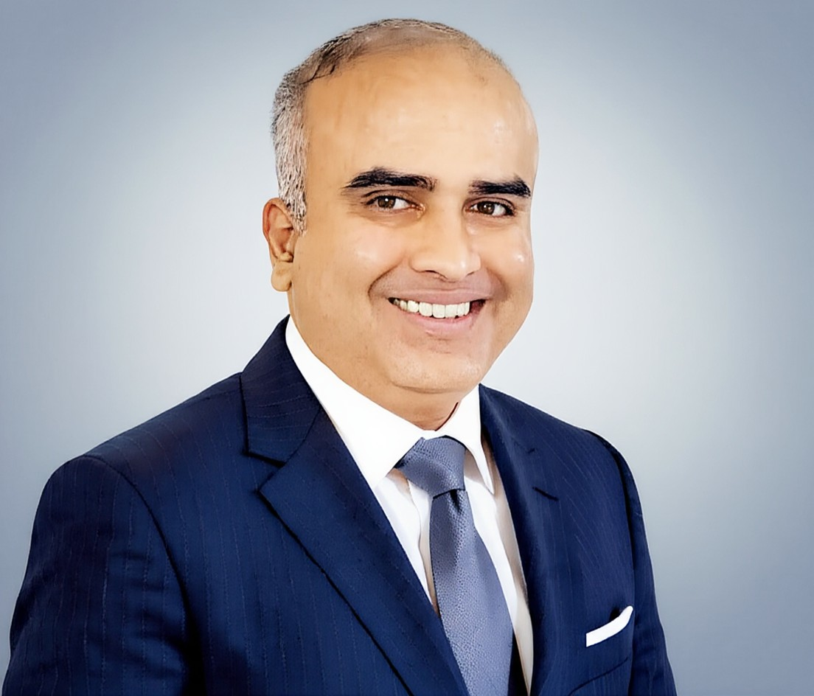

Global Engineering Leader. $2B Platform. Influencing 550+ Engineers.Healthcare Cloud at Scale.
Two decades of architecting enterprise platforms and building high-performance engineering organizations across cloud, platform, and product engineering. I operate at the intersection of strategy, technology, and people – with deep ownership of outcomes.

A leader who thinks in systems,
operates with conviction,
and leads with humanity.
I don't just manage engineering – I build the organizational muscle that lets technology compound. Every system I've designed, every team I've built, reflects a belief: that scale without soul is fragile, and speed without strategy is noise.
Strategic Depth
Sees three moves ahead. Connects platform architecture to business outcomes, aligning engineering investment with organizational trajectory.
Analytical Precision
Data-driven in decision-making. Operates with rigor - measuring what matters, questioning assumptions, and course-correcting with discipline.
Humane Leadership
Builds trust before building systems. Creates environments where engineers do their best work – through psychological safety, mentorship, and genuine care.
Deep Ownership
No delegation of accountability. Takes end-to-end responsibility from vision to production - and holds the line when it matters most.
Scale with Speed
Built and scaled platforms serving 50+ deployments globally. Designed CI/CD frameworks that cut deployment cycles by 60%. Operates at enterprise velocity without sacrificing quality.
Accuracy Under Pressure
99.9% uptime across mission-critical platforms. Zero post-release defects on foundational systems. Builds quality into culture, not just process.
Accountability as Practice
Owns the outcome, not just the activity. Champions blameless culture while maintaining sharp personal accountability. The buck stops here - always.
The person behind
the engineering.
I'm an enterprise platform engineering leader and ISB-Certified Chief Technology Officer with 20+ years building scalable systems and high-performance organizations. My career spans embedded systems, telecom, mobile platforms, enterprise architecture, and healthcare technology leadership – always at the intersection of deep technical complexity and organizational impact.
Currently at Oracle Health, I lead platform modernization and cloud migration strategy for a $2B+ product portfolio across 50+ global deployments with 550+ engineers. I specialize in building AI-ready enterprise systems, DevOps transformation, and regulated enterprise platforms. I specialise in healthcare SaaS platforms, regulated cloud migrations, and building engineering organisations that operate at global scale — fast, precise, accountable, and deeply human.
I hold dual executive certifications from ISB – Chief Technology Officer Programme and Leadership with AI – equipping me with both enterprise architecture thinking and AI governance frameworks that modern technology organizations demand.
Outside work, I write about engineering leadership, AI governance, technology strategy, and the culture of excellence. I believe the best engineering leaders are those who make themselves invisible – building teams so strong that the system runs without them.
ISB-Certified Chief Technology Officer
Indian School of Business · #1 in India, #2 in Asia, #12 Globally (FT 2026) · Executive Education · 2024–2025
ISB Leadership with AI Programme
Strategic AI governance, responsible AI, and AI-era leadership
20+ Years in Enterprise Engineering
Oracle · Cerner · Siemens · Samsung · Nokia · MindTree
Certified Scrum Master · ITIL
Process excellence, agile at scale, value stream optimization
"Build a team so strong, no one knows who the leader is. That's not invisibility – that's the highest form of leadership."
Building at scale,
across domains.
Technology depth,
leadership breadth.
Cloud & Infrastructure
DevOps, SRE & Platform
Engineering & Architecture
Leadership & Strategy
AI & Emerging Tech
Process & Quality
Writing, speaking &
shaping the discourse.
Invited speaker at national AI leadership forums. Published on AI governance, cloud transformation, and engineering leadership.
Beyond the Hype: Operationalizing AI for the Next Billion
A field walk-through from India AI Impact Summit 2026 on what operational AI looks like in practice: custom inferencing hardware for affordability, multilingual systems at population scale, and high-impact deployments across clinical trials, mobility, and food operations.
Conscious Leadership in India's AI Decade: Inside a Closed-Door Circle
A leadership reflection from Bengaluru on AI strategy through three lenses: system, society, and self, with a clear argument for humans in the lead, not just in the loop.
After the Summit Lights Fade: Hard Decisions for India's AI Decade
A post-summit leadership reflection for CTOs and tech leaders on what to do next: define your role on India's digital rails, make data and trust architecture production-grade, and move AI governance to board-level execution over the next 12-24 months.
When Technology Meets Humanity: Inside India's AI Kumbh and the Blueprint for 1.4 Billion
Reflections from a pan-India ISB alumni leadership conversation at India AI Impact Summit 2026. Focused on healthcare AI governance, equity architecture, and why India's SAHI-BODH-ABHA stack creates infrastructure for responsible AI at population scale—where governance and equity are built in by design.
Completed: ISB Leadership with AI - Levelling Up for AI-Led Leadership
Reflections on completing dual ISB executive programmes - CTO + Leadership with AI. Top leadership learnings for AI-era leaders on strategy, governance, ethics, and execution at scale.
Why 77% of Organizations Can't Scale AI Beyond Pilots
A data-driven analysis of what 87 senior executives at ISB revealed about AI scaling barriers, the three structural constraints blocking most organizations, and how the successful 23% approach task distribution.
AI Leadership Dialogues: Why AI ROI Frameworks Built for ERP Fail for AI
A practical conversation on why AI programs fail to convert pilots into business outcomes, and the missing operating bridges leaders need now for production-grade ROI.
Build a Team So Strong No One Knows Who the Leader Is
My leadership operating model for building high-trust, high-accountability teams that scale without heroics, while strengthening succession depth and execution culture.
On stage, on camera,
on the record.

Beyond the Hype: Token Dynamics & AI Sovereignty
Token economics, inference cost structures, model portability, and AI sovereignty choices — an execution-first lens for leaders moving AI from pilots to core operations.

Beyond the Hype: Operationalizing AI for the Next Billion
Custom inferencing silicon, multilingual AI across 22 Indic languages, and real-world deployments in healthcare, mobility, and food systems. Where execution replaces hype.

After the Summit Lights Fade: Hard Decisions for India's AI Decade
Hard decisions for CTOs shaping 12–24 month roadmaps: digital rails, healthcare AI governance, voice-first design, and board-level AI accountability.
Awards & milestones
along the journey.
ISB-Certified Chief Technology Officer
Indian School of Business · #1 in India, #2 in Asia, #12 Globally (FT 2026) · Executive Education · 2024-2025
Top-Rated Keynote Speaker
Distinguished speaker at Cerner's global tech conferences, 5 consecutive years (2017-2022)
2x Cerner KNOTT Award Winner
Highest recognition in Cerner's engineering organization for operational excellence
Leadership Excellence Award
For next-generation product architecture and hybrid cloud integration
Siemens Innovator's Award
Exceptional contributions in tooling automation and CI/CD transformation
Samsung Global VP Recognition
Certificate of Appreciation from Samsung Research, South Korea for innovation excellence
What colleagues &
leaders say.
A complete snapshot of experience,
leadership, and impact.
Download my executive bio - a comprehensive 1-page overview of my two-decade journey building platform engineering organizations, driving cloud transformations, and leading high-performance teams across healthcare technology.
Ready to build
something that lasts?
Whether you're scaling an engineering organization, driving platform transformation, or seeking a leader who operates with strategic depth and genuine care – let's talk. Exploring VP Engineering / CTO opportunities in Bengaluru? Let's talk.